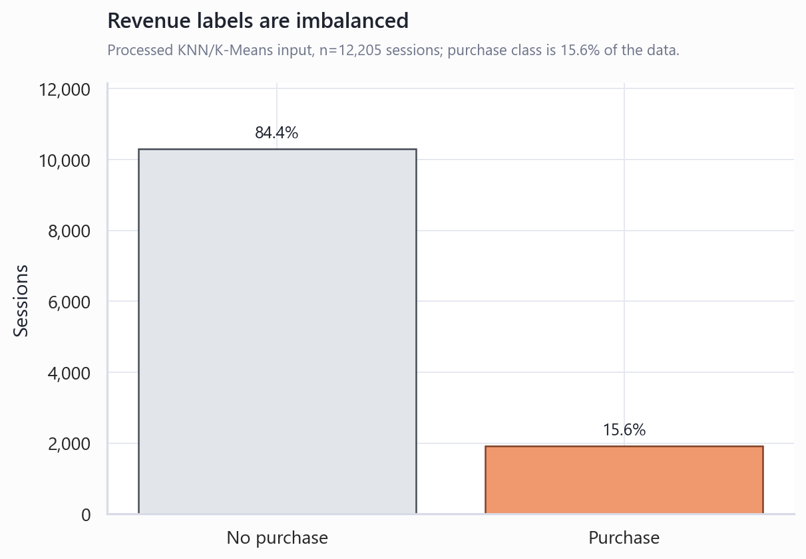
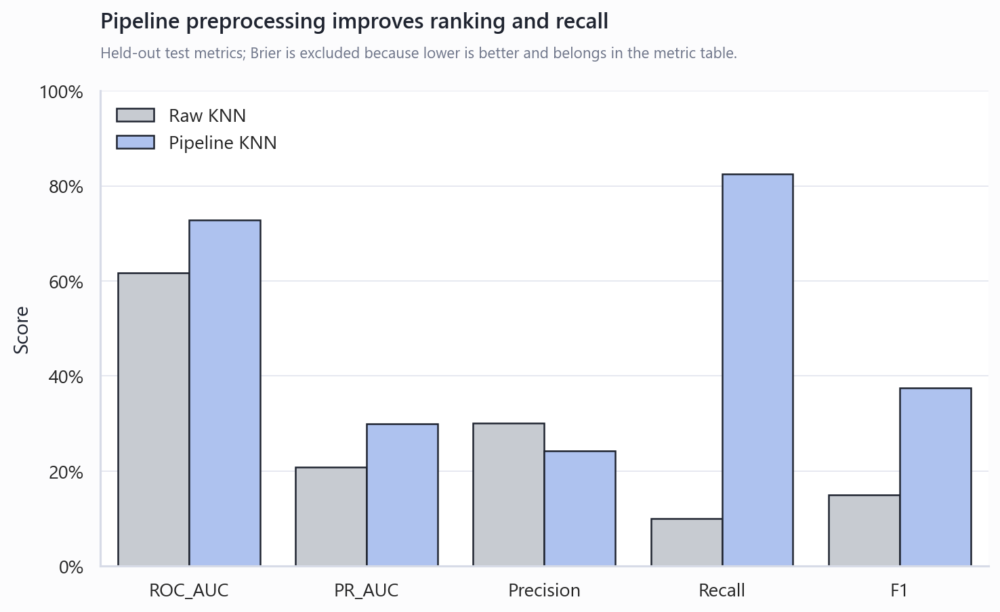
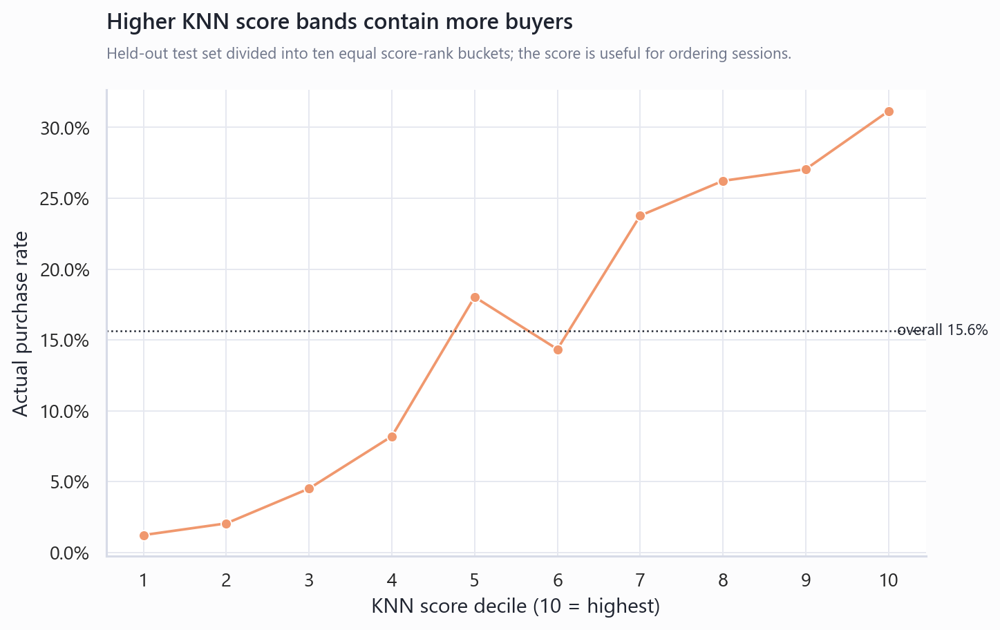
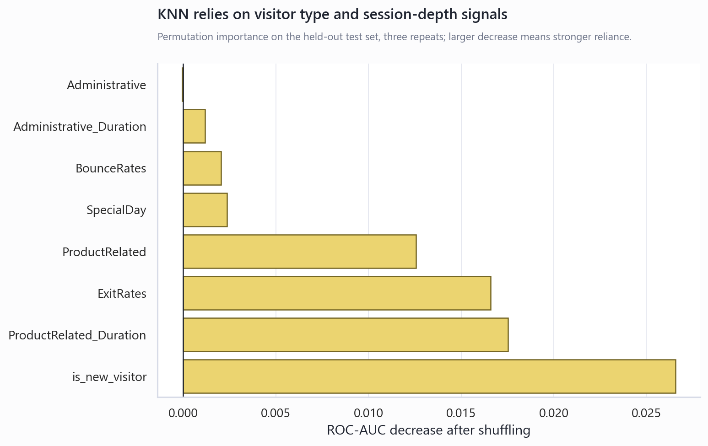
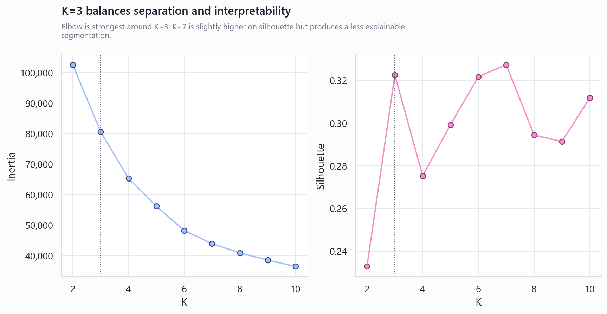
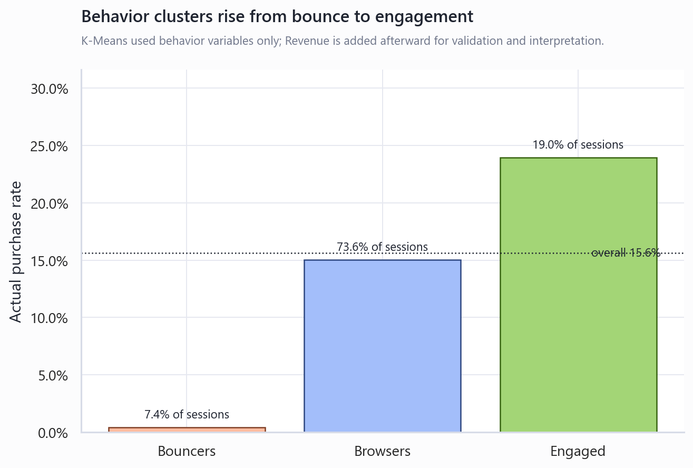
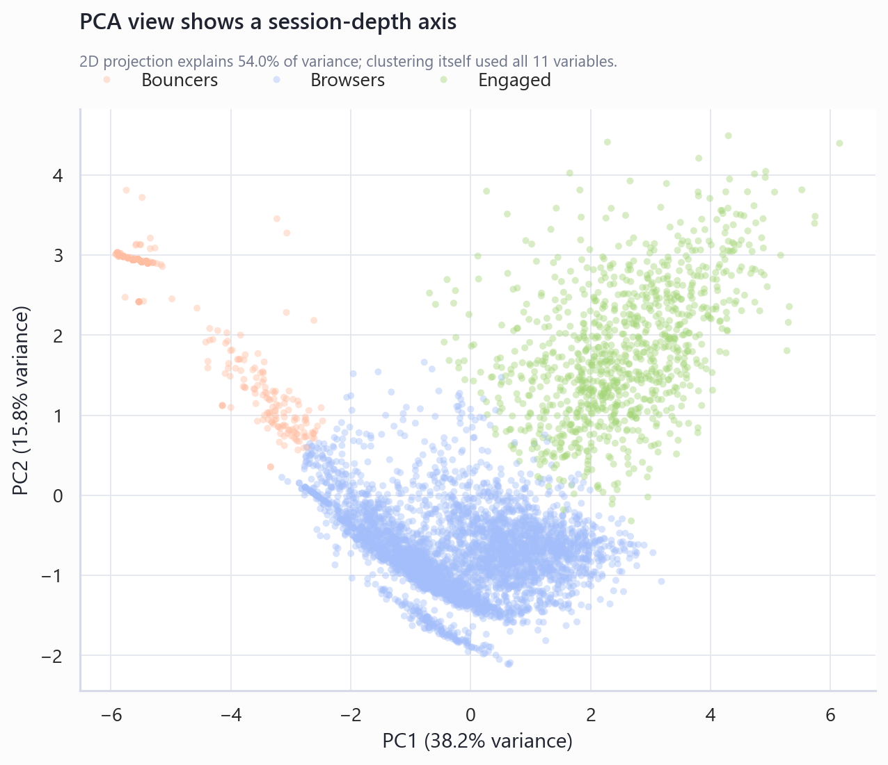
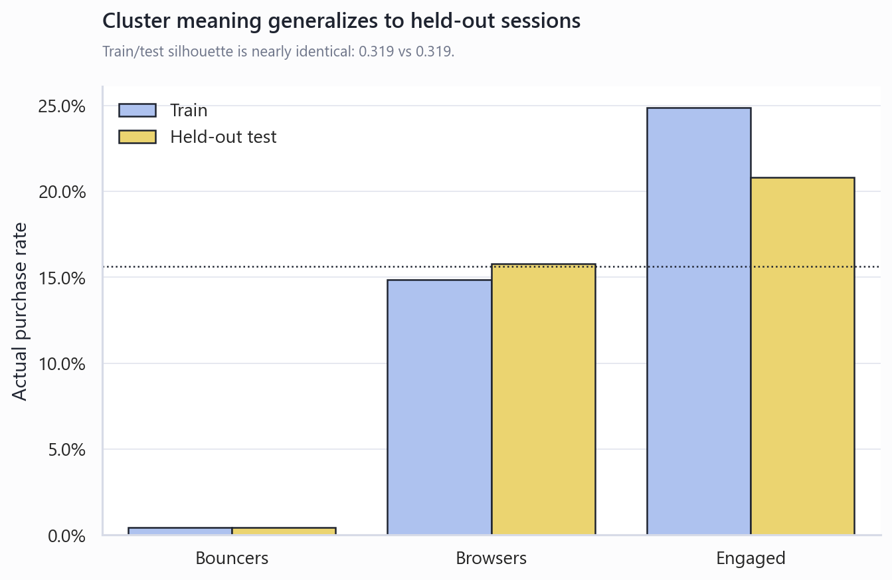

온라인 쇼핑 세션 데이터마이닝 보고서
본 보고서는 담당 모델인 KNN과 K-Means만을 대상으로, 데이터 전처리부터 모델 설계, 실험 결과, 해석, 성능 개선 아이디어까지 발표 가능한 순서로 정리했다.

KNN은 실제 구매 확률을 정밀하게 보정하는 모델이라기보다, 구매 가능성이 높은 세션을 우선순위화하는 거리 기반 점수 모델로 해석하는 것이 적절하다. K-Means는 구매 여부를 쓰지 않고도 즉시 이탈형, 일반 탐색형, 고관여형 방문자를 나눴고, 군집별 구매율이 뚜렷하게 상승했다.
KNN은 새로운 샘플과 기존 학습 샘플 사이의 거리를 계산한 뒤, 가장 가까운 K개 이웃의 라벨을 이용해 예측한다. 이 프로젝트에서는 구매 여부가 0/1이므로 KNeighborsRegressor를 이용해 가까운 이웃의 구매 라벨 평균을 구매 가능성 점수처럼 사용했다.
K-Means는 정답 라벨 없이 데이터를 K개의 군집으로 나누는 비지도 학습 알고리즘이다. 각 점은 가장 가까운 중심에 할당되고, 중심은 군집에 속한 점들의 평균으로 갱신된다. 이 과정을 중심이 안정될 때까지 반복한다.
| 구분 | KNN | K-Means |
|---|---|---|
| 학습 유형 | 지도학습. Revenue 라벨을 학습에 사용 | 비지도학습. Revenue는 학습 후 해석에만 사용 |
| 주요 목적 | 구매 가능성이 높은 세션의 우선순위화 | 방문 행동 패턴별 세션 세분화 |
| 거리 민감성 | 매우 큼. 로그 변환과 표준화 필요 | 매우 큼. 로그 변환과 표준화 필요 |
| 평가 관점 | ROC-AUC, PR-AUC, Recall, F1 | Silhouette, Davies-Bouldin, 군집별 구매율, 안정성 |
원본 데이터는 UCI Machine Learning Repository의 Online Shoppers Purchasing Intention Dataset이다. 원본은 12,330개 세션과 17개 입력 특징을 포함하며, Revenue가 구매 여부 라벨이다. UCI 설명에 따르면 결측값은 없고, 음성 클래스가 84.5%, 양성 클래스가 15.5%로 불균형하다.
Administrative, Administrative_Duration, Informational, Informational_Duration, ProductRelated, ProductRelated_Duration, BounceRates, ExitRates, SpecialDay, Weekend, is_new_visitor.
KNN과 K-Means 모두 거리 기반 모델이므로 페이지 수, 체류 시간, 이탈률처럼 단위와 분포가 다른 변수가 거리 계산을 지배하지 않게 로그 변환과 표준화를 적용했다.
KNN은 거리 기반 모델이기 때문에 원본 단위 그대로 학습한 Raw KNN을 기준선으로 두고, log1p, StandardScaler, SMOTE, KNN을 하나의 Pipeline으로 묶어 성능 변화를 비교했다. SMOTE와 표준화는 교차검증 fold 내부에서만 fit되도록 구성해 검증 데이터 누수를 막았다.
| 모델 | 전처리 | K | 거리/가중치 | 역할 |
|---|---|---|---|---|
| Raw KNN | 없음 | 5 | Euclidean, uniform | 원본 단위 거리 기준선 |
| Pipeline KNN | log1p → StandardScaler → SMOTE | 151 | Manhattan, distance | 최종 선택 모델 |

| 모델 | ROC-AUC | PR-AUC | Brier | Precision | Recall | F1 |
|---|---|---|---|---|---|---|
| Raw KNN | 0.6173 | 0.2084 | 0.1438 | 0.3016 | 0.0995 | 0.1496 |
| Pipeline KNN | 0.7284 | 0.2988 | 0.2352 | 0.2427 | 0.8246 | 0.3750 |
최종 KNN은 Recall이 크게 높아져 구매자를 넓게 잡는 방향으로 바뀌었다. 대신 Precision이 낮기 때문에 "구매 확정 예측"보다는 "구매 가능성이 높은 세션을 먼저 살펴보는 후보 선별 모델"로 쓰는 것이 더 안전하다.
Brier 점수는 악화되었다. 이는 KNN의 출력값을 실제 확률로 바로 해석하기 어렵다는 의미다. 따라서 0.78이라는 점수는 실제 구매확률 78%라기보다 구매자와 유사한 행동 패턴을 가진 정도로 해석하는 편이 타당하다.


K-Means는 Revenue를 학습에 사용하지 않고, KNN과 같은 행동 변수 11개만 사용해 세션을 군집화했다. 이후 Revenue를 붙여 군집별 실제 구매율을 확인함으로써, 행동 유형이 구매 성향과 연결되는지 사후 검증했다.

| 군집명 | 세션 비중 | 구매율 | 상품 페이지 수 | 상품 체류 시간 | 해석 |
|---|---|---|---|---|---|
| Bouncers | 7.4% | 0.4% | 2.7 | 41.8초 | 상품 탐색이 거의 없고 이탈률이 높은 즉시 이탈 세션 |
| Browsers | 73.6% | 15.0% | 26.3 | 964.5초 | 전체의 다수를 차지하는 일반 탐색 세션 |
| Engaged | 19.0% | 24.0% | 65.8 | 2,604.7초 | 상품 탐색과 체류 시간이 큰 고관여 세션 |


| Silhouette | 0.3188 |
|---|---|
| Davies-Bouldin | 1.1611 |
| Calinski-Harabasz | 4,055.7 |
| ARI vs Revenue | 0.0104 |
| NMI vs Revenue | 0.0267 |
ARI와 NMI가 낮은 것은 실패라기보다 정상적인 비지도 학습 결과다. 군집은 구매/비구매 이분법을 복제하는 것이 아니라, 행동 패턴을 기준으로 다른 관여도 그룹을 찾는다.

KNN과 K-Means는 모두 고객 행동을 다루지만, 비즈니스에서 쓰이는 방식은 다르다. KNN은 "어떤 세션을 먼저 공략할 것인가"를 정하는 예측 기반 우선순위 모델이고, K-Means는 "고객 행동을 어떤 그룹으로 나누고 다르게 대응할 것인가"를 정하는 세분화 모델이다.
KNN은 비슷한 행동을 보인 과거 세션의 구매 결과를 바탕으로 현재 세션의 구매 가능성을 점수화한다. 따라서 결과값은 단순한 정답/오답보다 마케팅 우선순위를 정하는 데 더 적합하다.
K-Means는 구매 라벨 없이 상품 탐색 깊이, 체류 시간, 이탈률 같은 행동 변수만으로 고객 세션을 나눈다. 따라서 각 군집은 서로 다른 마케팅 전략을 적용하기 위한 고객군으로 해석할 수 있다.
| 모델 | 비즈니스 질문 | 주요 해석 | 실행 전략 |
|---|---|---|---|
| KNN | 누가 구매할 가능성이 높은가? | 구매자와 유사한 행동 패턴을 가진 세션을 높은 점수로 정렬한다. | 상위 점수 고객에게 쿠폰, 추천 상품, 장바구니 복귀 메시지를 우선 노출한다. |
| K-Means | 고객 행동을 어떤 유형으로 나눌 수 있는가? | 방문 깊이와 이탈 정도에 따라 Bouncers, Browsers, Engaged로 나뉜다. | 군집별로 랜딩 개선, 탐색 지원, 전환 촉진 전략을 다르게 적용한다. |
상품 페이지 탐색이 거의 없고 이탈률이 높으므로 구매 설득보다 진입 경험 개선이 우선이다. 페이지 로딩, 첫 화면 메시지, 상품 카테고리 진입 경로를 점검한다.
탐색은 하지만 구매 전환이 평균 수준에 머무르는 대규모 고객군이다. 검색 필터, 인기 상품 추천, 장바구니 유도 배너로 비교와 선택의 마찰을 줄인다.
상품 탐색과 체류 시간이 길어 구매 의도가 비교적 높다. 한정 쿠폰, 무료배송 기준 안내, 관련 상품 번들처럼 마지막 전환을 밀어주는 전략이 적합하다.
이번 담당 범위에서는 KNN과 K-Means를 별도 모델로 적용했지만, 두 모델의 결과는 서로 보완적으로 쓸 수 있다. K-Means는 방문 행동 유형을 설명하고, KNN은 세션 단위 구매 가능성 점수를 제공한다.
K-Means가 만든 Bouncers, Browsers, Engaged 라벨을 다른 지도학습 모델의 입력 변수로 추가할 수 있다. 세션 깊이의 비선형 구조를 간단한 범주형 신호로 전달할 수 있기 때문이다. 다만 이번 KNN에는 큰 의미가 없었다. KNN과 K-Means가 같은 행동 변수와 거리 기반 구조를 사용했기 때문에, 군집 라벨은 이미 KNN이 거리 계산에서 반영한 정보를 거칠게 요약하는 수준에 가까웠다.
전체 세션에 동일한 0.5 기준을 적용하지 않고, Engaged 군집에서는 정밀도 중심, Browsers 군집에서는 재현율 중심으로 임계값을 다르게 잡을 수 있다.
KNN 점수는 실제 확률로 보정되어 있지 않다. Platt scaling이나 isotonic regression을 후처리로 붙이면 "확률"로 읽을 때의 신뢰도를 개선할 수 있다.